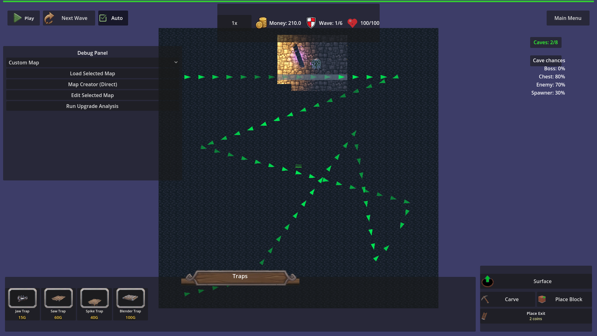
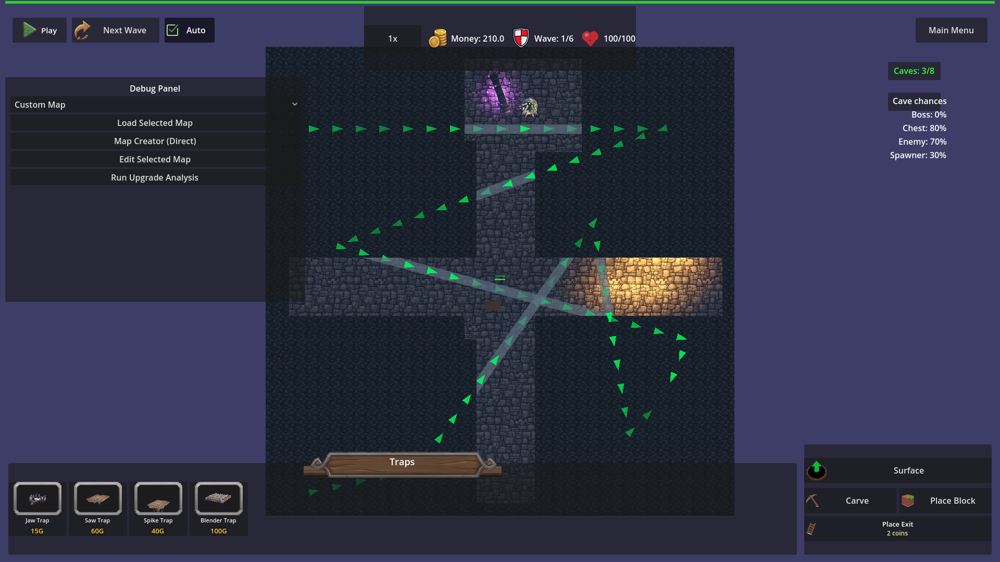
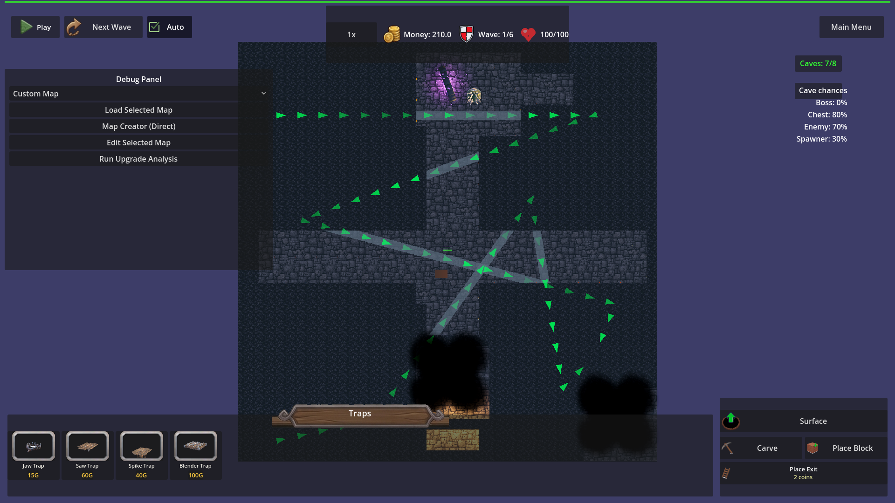

Manual Test Report – cave-carved-path-torches (iteration 2)
Summary
- Result: PASSED
- Tested on: 2026-08-22, project runner (windowed Godot 4.4.1, gl_compatibility, Dummy audio), map_9
- Scenario: .gen/ui_scenario.md (walked via tests/scenarios/cave_carved_path_torches.json, windowed)
- Tester: Manual-tester profile
Overall: Ran the focused torch scenario windowed (no --headless) with top-down
ortho debug screenshots before the cross carve, after the cross carve, and
after the cave declines. All 7 harness expectations passed and the screenshots
confirm the story: the confirmed-open cave path is lit, the full cross carve is
torch-lined end to end on all four arms, and declined cave interiors go fully
dark. One visual observation about dim light pools is noted below (Low/Medium,
does not affect torch placement).
Scenario Walkthrough
### Step 1 – Before: confirmed-open cave with lit path
- Action: Confirmed dangerous cave 9101 (decision "yes"), switched to the
underground layer, and took a top-down ortho screenshot
(debug_look_down_underground).
- Expected: The confirmed-open cave's carved path has active torches.
- Observed: The cave room and its carved corridor are lit; harness logged
`[TORCH] cave-path update active=29` right after confirmation, and
count_in_cave reached 13. While the cave was still pending, count_in_cave
was 0 (wait passed before the "yes").
- Status: PASS
### Step 2 – Carve the long cross (2×18 and 18×2 rectangles through origin)
- Action: Two carve_rectangle calls crossing at (0,-3,0).
- Expected: Torches appear along the entire new carve, no pool cap.
- Observed: Torch pool expanded on demand (12 × "Expanded torch pool by 10")
and the update logged `[TORCH] cave-path update active=148` — far above the
old MAX_TORCHES=100 ceiling, so no cap-induced holes. Every count_near
sample at 2-unit spacing along all four arms (z = -8…8 and x = -8…8, radius
2.5) found at least one active torch.
- Status: PASS
### Step 3 – After: whole cross lit end to end
- Action: Screenshot `dungeon_cross_carve_lit.png` after torch placement
caught up.
- Expected: Every arm of the cross torch-lit end to end; no dark carved
stretch; uncarved rock may stay dark.
- Observed: The carved cross is clearly distinguishable from the dark
uncarved rock, and warm torch flames are visible distributed along the full
length of each arm (zoomed crops confirm flame dots along the north and
south arms). The harness state proves coverage exactly: unlit_carved_in_cave
= 0 for the whole connected network. Note: in gl_compatibility the light
pools are small, so the floor between torch flames reads fairly dark — see
Issues.
- Status: PASS
### Step 4 – Later corridor + declined caves stay dark
- Action: Carved a 4×1 corridor at z=-8 (samples x=1.5/3.5/5.5 all lit,
active=153). Then placed pending cave 9102 overlapping the carved path
(0 torches while pending — confirmed), declined it, and declined isolated
cave 9103 at (8,-3,8).
- Expected: New corridor fully lit; declined cave interiors have zero torches.
- Observed: All corridor samples passed. After each decline the interior
torch count returned to 0 (9102: 0, 9103: 0); the decline also re-seals its
blocks ("Decline-lock cave=9102 blocks=49"), so the final screenshot shows
the sealed declined area as solid rock again — fully dark, no torches.
Final shot: `open_cave_no_dark_corridor.png` — no dark carved corridor left
in the open network.
- Status: PASS
Criteria
- Confirmed-open cave path lit (pending = 0 torches, after yes ≥ 1 torch)
-

- Full cross carve lit end to end on all four arms, no dark carved stretch
(active=148, all 2-unit count_near samples pass, unlit_carved_in_cave = 0)
-

- No leftover dark carved corridor in the open network; declined caves
(9102 overlapping path, 9103 isolated) have zero interior torches
-

- Torch pool does not cap coverage on large carves
- Verified from the run log: pool expanded on demand, `[TORCH] cave-path
update active=148` (cross) and `active=153` (after later corridor), above
the old 100 ceiling. (Log evidence, not screenshot-provable.)
- Debug `[TORCH]` log line per cave-path update with active count
- Verified in `.gen/harness/_logs/cave_carved_path_torches.out.log`
(e.g. `[TORCH] cave-path update active=148`). (Log evidence.)
- Full harness result: `.gen/harness/cave_carved_path_torches/result.json`
status=pass, all 7 expectations pass. Full regression scenario
`declined_cave_torches_extinguish` also status=pass.
Issues and Observations
- Low/Medium – In gl_compatibility the torch light pools are visually small:
individual torch flames are clearly visible along every arm, but the floor
between flames reads dark in the still. Torch placement/coverage is correct
(state-proven); this is a rendering-intensity observation only, worth a look
in Forward+ if stronger player-facing glow is wanted. Affected step 3.
- Low – Pre-existing theme warnings (`HudTheme.tres` missing
wood_panel.png etc.) appear on every run; unrelated to this feature.
Recommendation
Ready. The torch coverage behavior matches all acceptance bullets, both
harness scenarios pass, and the windowed screenshots back the player-visible
story. The dim-light-pool observation can be a cosmetic follow-up, not a
blocker.